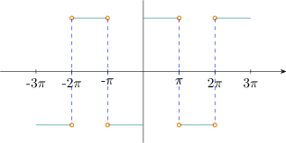
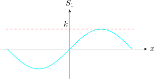
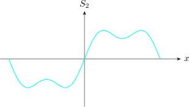
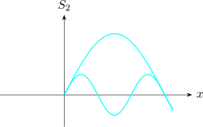

7.3 Fourier Series
Assume \(f(x)\) is a periodic function of period \(2\pi \) that can be represented by a trigonometric series \[f(x) = a_0 + \sum ^{\infty }_{n = 1} \big (a_n \cos nx + b_n \sin n x\big ) \hspace {0.5cm} \cdots \cdots \cdots \hspace {0.5cm} (d)\]
then \begin {align*} \int ^{\pi }_{-\pi } f(x)dx & = \int ^{\pi }_{-\pi }a_0 dx + \sum ^{\infty }_{n = 1}\Bigg [a_n\int ^{\pi }_{-\pi }\cos nx dx + b_n \int ^{\pi }_{-\pi } \sin nx dx\Bigg ]\\\\ \therefore \hspace {0.5cm} \int ^{\pi }_{-\pi } f(x)dx & = 2\pi a_0 \end {align*}
\[\implies \hspace {1cm} a_0 = \frac {1}{2\pi }\int ^{\pi }_{-\pi }f(x)dx\]
Multiplying \((d)\) by \(\cos mx\) , where \(m\) is any fixed positive integer, and integrating yields \begin {align*} \int ^{\pi }_{-\pi } f(x) \cos mx dx & = \int ^{\pi }_{-\pi } a_0 \cos mx dx + \sum ^{\infty }_{n=1}\Bigg [a_n\int ^{\pi }_{-\pi } \cos nx \cos mx dx + b_n \int ^{\pi }_{-\pi } \sin nx \cos mx dx \Bigg ]\\\\ \int ^{\pi }_{-\pi } f(x) \cos mx dx & = a_m \pi \end {align*}
\[\implies \hspace {1cm} a_m = \frac {1}{\pi }\int ^{\pi }_{-\pi } f(x) \cos mx dx\]
Similarly, multiplying \((d)\) by \(\sin mx\), we get \[ b_m = \frac {1}{\pi }\int ^{\pi }_{-\pi } f(x)\sin mx dx\]
Write \(n\) in place of \(m\) we have the so called Euler’s formulas \[a_0 = \frac {1}{2\pi }\int ^{\pi }_{-\pi }f(x)dx\hspace {0.2cm}, \hspace {0.5cm} a_n = \frac {1}{\pi }\int ^{\pi }_{-\pi } f(x) \cos nx dx\hspace {0.3cm}, \hspace {0.5cm} b_n = \frac {1}{\pi }\int ^{\pi }_{-\pi } f(x)\sin nx dx\]
The numbers \(a_0, a_n\) and \(b_n\) are called the Fourier coefficients of \(f(x)\). The trigonometric series \[a_0 + \sum ^{\infty }_{n=1} \Big [a_n \cos nx + b_n \sin nx\Big ]\] is called the Fourier series.
- 1.
- Find the Fourier series of
\[f(x) = \begin {cases} -k & -\pi \leq x <0\\ k & 0\leq x <\pi \\ \end {cases} \]
\[f(x + 2\pi ) = f(x)\]
Solution.

\begin {align*} f(x) & = a_0 + \sum ^{\infty }_{n=1} \big (a_n \cos nx + b_n \sin nx \big )\\\\ a_0 & = \frac {1}{2\pi }\int ^{\pi }_{-\pi }f(x)dx = \frac {1}{2\pi } \Bigg [\int ^0_{-\pi }(-k)dx + \int _0^{\pi } kdx \Bigg ] = 0 \end {align*}
\[ a_n = \frac {1}{\pi }\Bigg [\int ^0_{-\pi } (-k) \cos nx dx + \int ^{\pi }_0 k\cos n x dx \Bigg ] = 0 \]
\begin {align*} b_n & = \frac {1}{\pi }\int ^{\pi }_{-\pi } f(x) \sin n x dx\\\\ & = \frac {-k}{\pi }\int ^0_{-\pi } \sin nx dx + \frac {k}{\pi }\int ^{\pi }_0\sin n xdx\\\\ & = \frac {k}{n\pi }\hspace {0.1cm}\cos n x \Bigg |^0_{-\pi } + \frac {-k}{n\pi }\hspace {0.1cm}\cos nx \Bigg |^{\pi }_0\\\\ & = \frac {k}{n\pi }[1 - \cos n \pi ] - \frac {k}{n\pi }[\cos n\pi - 1] \end {align*}
\begin {align*} b_n & = \frac {-2k}{n\pi }\hspace {0.1cm}\cos n \pi + \frac {2k}{n\pi }\hspace {2cm} \cos n \pi = (-1)^n \hspace {0.1cm} , n = 1,2,\cdots \cdots \hspace {1cm} \sin (n\pi ) = 0\\\\ b_n & = \frac {-2k}{n\pi }(-1)^n + \frac {2k}{n\pi }\\\\ \implies \hspace {0.4cm} b_n & = \begin {cases} 0 & \text {if}\hspace {0.3cm}n \hspace {0.3cm} \text {is even}\\\\ \dfrac {4k}{n\pi } & \text {if}\hspace {0.3cm}n \hspace {0.3cm} \text {is odd}\\ \end {cases}\\ \end {align*}
\begin {align*} f(x) & = \sum ^{\infty }_{n=1} b_n \sin nx \hspace {1cm} \text {since}\hspace {0.3cm} a_n = 0 \forall n\\ & = b_1 \sin x + b_2 \sin 2x + b_3 \sin 3x + \cdots \cdots \cdots \\ & = \frac {4k}{\pi }\sin x + \frac {4k}{3\pi }\sin 3x + \frac {4k}{5\pi }\sin 5x + \cdots \cdots + \frac {4k}{2n -1}\sin (2n-1)x\\ & = \frac {4k}{\pi }\Big [\sin x + \frac {1}{3}\sin 3x + \frac {1}{5}\sin 5x + \cdots \cdots + \frac {1}{2n -1}\sin (2n-1)x\Big ]\\\\ \therefore \hspace {0.4cm} & = \frac {4k}{\pi } \sum ^{\infty }_{n=1} \frac {1}{2n -1}\sin (2n-1)x\\ \end {align*}
\[f(x) = \frac {4k}{\pi }\Big (\sin x + \frac {1}{3}\sin 3x + \frac {1}{5}\sin 5x + \cdots \cdots \cdots \Big )\]
The partial sums are: \[S_1 = \frac {4k}{\pi }\, \sin x\hspace {0.2cm}, \hspace {0.5cm} S_2 = \frac {4k}{\pi }\Big (\sin x + \frac {1}{3}\sin 3x\Big )\hspace {0.2cm},\hspace {0.5cm} S_3 = \frac {4k}{\pi }\Big ( \sin x+ \frac {1}{3}\sin 3x + \frac {1}{5}\sin 5x\Big )\]


\[S_2=S_1 + \dfrac {4k}{3\pi }\,\sin 3x\]

Now assuming that \(f(x)\) is the sum of the series and setting \(x = \dfrac {\pi }{2}\), we have \[f\Big (\frac {\pi }{2}\Big ) = k = \frac {4k}{\pi }\Big ( 1 - \frac {1}{3} + \frac {1}{5}- \frac {1}{7} + \frac {1}{9} - + \cdots \cdots \cdots \Big )\]
\[\implies \hspace {0.4cm} k = \frac {4k}{\pi } \Big ( 1 - \frac {1}{3} + \frac {1}{5}- \frac {1}{7} + \frac {1}{9} - + \cdots \cdots \cdots \Big )\]
\[\therefore \hspace {0.4cm} 1 - \frac {1}{3} + \frac {1}{5}- \frac {1}{7} + \frac {1}{9} - + \cdots \cdots \cdots = k\Big (\frac {\pi }{4k}\Big ) = \frac {\pi }{4}\]
Questions on this section
Stuck on something here? Ask below and it stays attached to this topic.